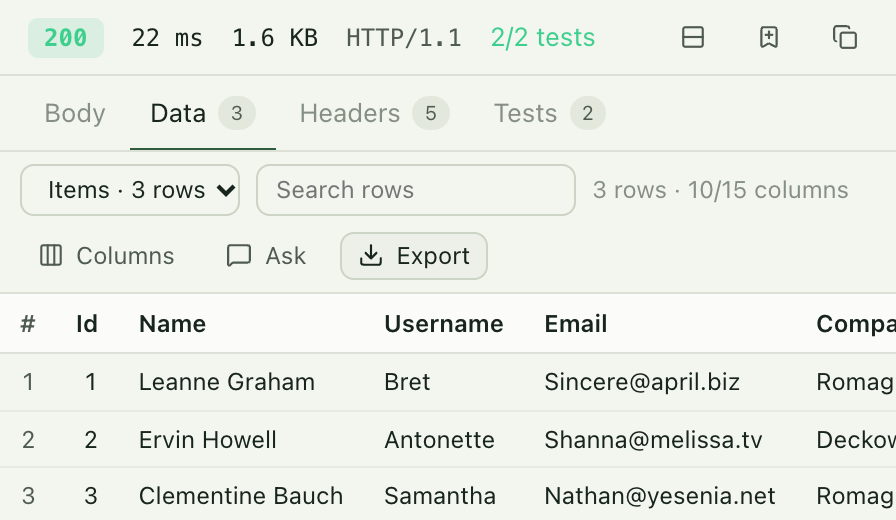
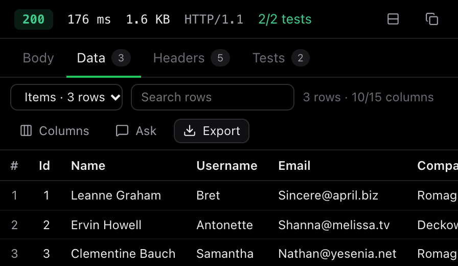

Test REST APIs, MCP servers and AI agents from one desktop app.
Forge saves each request as a JSON file in your repository, so your API tests are reviewed and versioned with the code they test. Tokens stay in a local file that never reaches git. Free and open source under Apache 2.0.
statusequals200got 200$.lengthequals3got 3
$[0].id {{userId}}saved as 1[ { "id": 1, "name": "Leanne Graham", "email": "Sincere@april.biz" }, { "id": 2, "name": "Ervin Howell", "email": "Shanna@melissa.tv" }, { "id": 3, "name": "Clementine Bauch", "email": "Nathan@yesenia.net" } ]
Press Send to see the response.
What's included
Everything below works without an AI model or an account.
- Requests
- REST and GraphQL with params synced to the URL,
:idpath variables, Bearer, Basic, API key, OAuth 2.0, AWS Signature, Digest, Hawk and JWT auth, and JSON, XML, form, multipart and file bodies. GraphQL queries complete and check against the server's schema as you type. Paste acurlcommand to import it. - Folders
- Set auth, headers, variables and scripts once on a collection or folder, and every request inside inherits them. Sign in once instead of fifty times.
- Environments
{{baseUrl}}style variables for local, staging and production, each with its own cookie jar. Unknown variables are underlined before you send.- Tests and scripts
- Assertions on status, headers, JSONPath, body, time and size, generated from a response if you like. For anything more, pre-request and post-response scripts with Postman's
pmAPI, includingpm.sendRequest. - History
- Every request you send, ready to open, send again or save. Compare a response with an earlier one, or staging with production, and see exactly which fields changed.
- Examples and mocks
- Save responses as examples for your docs, then serve them from a local mock server so the frontend can start before the backend exists.
- Website radar
- Log into a web app in a separate browser and Forge records the API calls it makes. Pick the ones you want and they become requests, auth included. An AI agent can click through the app to find more.
- Data and reports
- JSON becomes a sortable table. Export to Excel, PDF, Word, PowerPoint, CSV or Markdown, computed from the data itself.
- Other protocols
- WebSocket with custom headers, A2A agents with streaming tasks, and website checks for headers, caching, security and broken links.
- Code
- Turn any request into cURL, fetch, axios, Python, Go, Java, C#, PHP, Ruby, Rust, HTTPie or PowerShell. Press
⌘Kto jump to any request.


Switch from Postman or Bruno without rewriting anything
Drop in an export and keep working. Forge reads Postman, Insomnia, Bruno, OpenAPI, Swagger, HAR and cURL, and detects the format itself.
Scripts run as they are. Postman's pm, Bruno's bru, req and res, and Insomnia's scripts, with the Chai-style assertions tests commonly use. They run in the app and in the command-line runner for CI.
Collections keep their shape. Postman and Bruno collection and folder auth and scripts become folder settings, saved responses become examples, and credentials found in environments go to the local secrets file.
Imports don't get your trust automatically. Requests you didn't write can't make their own server look like one of yours. Forge asks before a script sends a token anywhere new.
// Fetch a fresh token before each request
pm.sendRequest({
url: pm.environment.get("baseUrl") + "/oauth/token",
method: "POST",
body: { mode: "urlencoded", urlencoded: [
{ key: "grant_type", value: "client_credentials" }
] }
}, (err, res) => {
pm.environment.set("token", res.json().access_token);
});
$ node forge.mjs run "Shop API" --env staging --reporter junit
MCP servers and agents, in the same client as your APIs
Most API clients stop at HTTP. Forge also speaks MCP and A2A, the protocols AI tools use to call your services.
Test an MCP server over stdio, Streamable HTTP or SSE. List its tools, call them with your own arguments, and see every JSON-RPC message in the console.
Let your AI assistant use Forge. Turn on the local server in Settings and Claude, Copilot or Cursor can list, run and save the requests in your workspace. Calls that change data wait for your approval.
Bring your own model, if you want one. Claude, OpenAI, Gemini, Azure, Bedrock, OpenRouter or a local Ollama model can answer questions about a response or run an agentic test. Models see {{token}}, never its value.
$ claude mcp add --transport http forge \
http://127.0.0.1:7878/mcp \
--header "Authorization: Bearer <token>"
list_requests browse saved requests run_request send one and run its tests run_folder run a folder as a suite http_request send a one-off request query_data filter and group a response create_report write an Excel or PDF report save_request add a request to the workspace
Your requests are files in your repository
Pick any folder, such as one inside your project. Commit the requests, review changes in pull requests, and your team gets them on the next pull.
- No account. There is nothing to sign up for. Forge runs entirely on your computer.
- No telemetry. The only request Forge makes on its own is the update check, which you can turn off.
- Secrets split on import. Tokens and passwords found in imported Postman or Insomnia environments go to the local file.
- Approval before AI sends a secret. A request built by an AI that would send a token to a new host waits for you. This check can't be disabled.
- Sandboxed scripts. Scripts have no network or file access. If one tries to redirect a request or send a token somewhere new, Forge asks first.
- History and cookies stay on your computer. They're kept outside the workspace, and history stores secrets as their
{{placeholders}}. - Signed updates. Each update is signed by Stellitron and verified before it installs.
- Company networks. Forge uses the system proxy and certificate store, so it works on VPNs without setup.
Download
Installed copies update themselves after you approve each update.
Forge is built by Stellitron in Bengaluru and developed in the open. Report bugs or send pull requests on GitHub.
$ git clone https://github.com/stellitron/forge $ cd forge && npm install $ npm run app